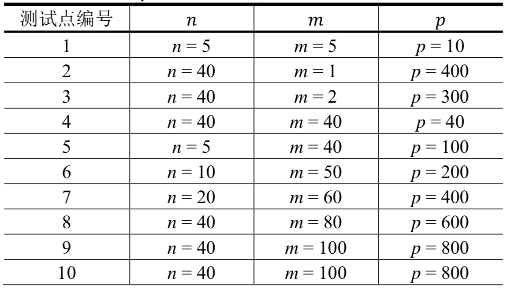

CZ市为了欢迎全国各地的同学，特地举办了一场盛大的美食节。
作为一个喜欢尝鲜的美食客，小M自然不愿意错过这场盛宴。他很快就尝遍了美食节所有的美食。然而，尝鲜的欲望是难以满足的。尽管所有的菜品都很可口，厨师做菜的速度也很快，小M仍然觉得自己桌上没有已经摆在别人餐桌上的美食是一件无法忍受的事情。于是小M开始研究起了做菜顺序的问题，即安排一个做菜的顺序使得同学们的等待时间最短。
小M发现，美食节共有$𝑛$种不同的菜品。每次点餐，每个同学可以选择其中的一个菜品。总共有$𝑚$个厨师来制作这些菜品。当所有的同学点餐结束后，菜品的制作任务就会分配给每个厨师。然后每个厨师就会同时开始做菜。厨师们会按照要求的顺序进行制作，并且每次只能制作一人份。
此外，小M还发现了另一件有意思的事情——虽然这$𝑚$个厨师都会制作全部的$𝑛$种菜品，但对于同一菜品，不同厨师的制作时间未必相同。他将菜品用1,2, ... , $𝑛$依次编号，厨师用1,2, ... , $𝑚$依次编号，将第$𝑗$个厨师制作第$𝑖$种菜品的时间记为$𝑡_{𝑖,𝑗}$。
小M认为：每个同学的等待时间为所有厨师开始做菜起，到自己那份菜品完成为止的时间总长度。换句话说，如果一个同学点的菜是某个厨师做的第$𝑘$道菜，则他的等待时间就是这个厨师制作前$𝑘$道菜的时间之和。而总等待时间为所有同学的等待时间之和。
现在，小M找到了所有同学的点菜信息——有$𝑝_𝑖$个同学点了第$𝑖$种菜品($𝑖 = 1,2, ... , 𝑛$)。他想知道的是最小的总等待时间是多少。
第1行包含两个正整数$𝑛$和$𝑚$，表示菜品的种数和厨师的数量。
第2行包含$𝑛$个正整数，其中第$𝑖$个数为$𝑝_𝑖$，表示点第$𝑖$种菜品的人数。
接下来有$𝑛$行，每行包含$𝑚$个非负整数，这$𝑛$行中的第$𝑖$行的第$𝑗$个数为$𝑡_{𝑖,𝑗}$，表示第$𝑗$个厨师制作第$𝑖$种菜品所需的时间。
每行相邻的两个数之间均由一个空格隔开，行末均没有多余空格。
输出仅一行包含一个整数，为总等待时间的最小值。
3 2 3 1 1 5 7 3 6 8 9
47
【样例说明】
厨师1先制作1份菜品2，再制作2份菜品1。点这3道菜的3个同学的等待时间分别为3，3+5=8，3+5+5=13。
厨师2先制作1份菜品1，再制作1份菜品3。点这2道菜的2个同学的等待时间分别为7，7+9=16。
总等待时间为3+8+13+7+16=47。
虽然菜品1和菜品3由厨师1制作更快，如果这些菜品都由厨师1制作，总等待时间反而更长。如果按上述的做法，将1份菜品1和1份菜品3调整到厨师2制作，这样厨师2不会闲着，总等待时间更短。
可以证明，没有更优的点餐方案。
【数据规模及约定】
对于100%的数据，$𝑛 ≤ 40,𝑚 ≤ 100,𝑝 ≤ 800,𝑡_{𝑖,𝑗}≤ 1000$（其中$𝑝 = \sum 𝑝_𝑖$，即点菜同学的总人数）。
每组数据的$𝑛、𝑚$和$p$值如下：

 Comet OJ
Comet OJ